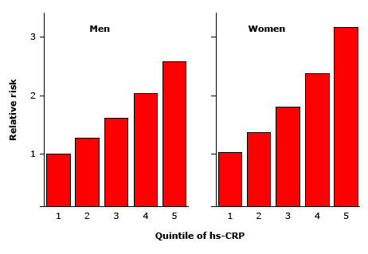

Increasing concentrations of C-reactive protein predict the risk of myocardial infarction

In apparently healthy men (left panel) and women (right panel), the adjusted relative risk of future myocardial infarction is associated with increasing quintiles of high-sensitivity C-reactive protein. Risk estimates are adjusted for age, smoking status, body mass index (kg/m2), diabetes, history of hyperlipidemia, history of hypertension, exercise level, and family history of coronary disease.